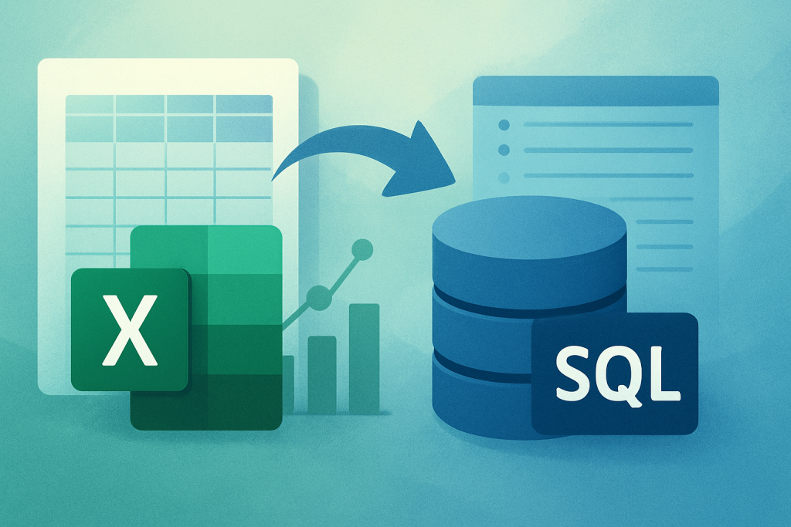
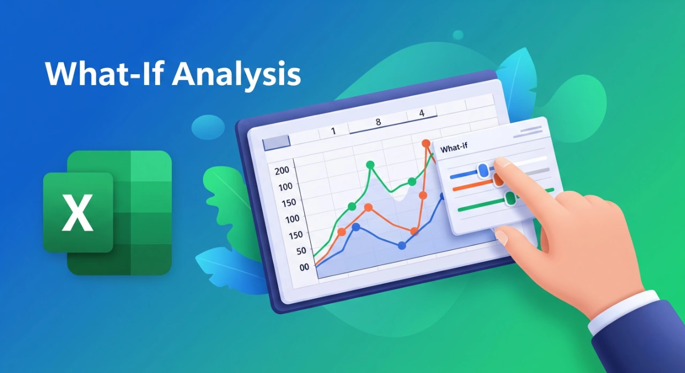
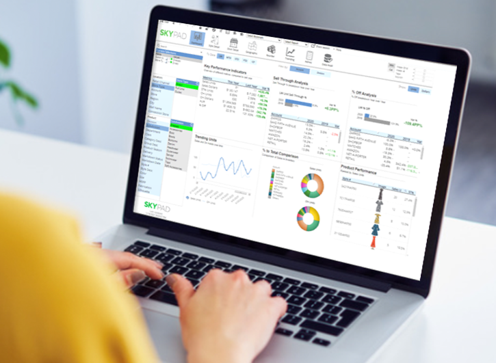

2025 - Capstone & Portfolio
Built full-stack systems, portfolio website, and data dashboard projects.
Graduate of Bachelor of Science in Accounting Information System
I’m a graduate of Bachelor of Science in Accounting Information Systems, and I consider myself someone who is driven, optimistic, and genuinely passionate about what I do. I believe that work should be something you look forward to, not something you feel forced to do every day. For me, motivation comes from knowing that I enjoy learning, building, and understanding how systems and technology can improve processes and create meaningful impact. I value the idea that life is short, so I try to spend it doing things that challenge me, excite me, and help me grow. I’m also a fast learner who enjoys exploring new ideas and adapting to different situations. When I encounter something unfamiliar, I take initiative to understand it and apply it in a practical way. This mindset keeps me motivated and allows me to continuously improve both personally and professionally.
I enjoy working independently because it allows me to focus deeply and understand tasks at my own pace, especially when solving problems or building projects. At the same time, I value teamwork, particularly when brainstorming ideas and gaining different perspectives that can improve the outcome of a project. My experience as a Student Council Treasurer helped me develop strong skills in budgeting, organization, and leadership through managing funds and coordinating with different people. I also led fundraising initiatives, which I found meaningful because they created value beyond just financial results. I may seem shy at first, but once I get comfortable, I become more open, engaging, and easy to work with. I believe that balancing independence and collaboration is important in creating effective and well-rounded solutions.
I am naturally curious and enjoy discovering new applications, systems, and technologies, especially when I can see how they help people in real-life situations. I often build small projects to practice my skills because I believe that learning is more effective when applied. Growing up in Quezon Province and later moving to Cavite while visiting Manila gave me a broader perspective in life. Seeing underprivileged communities, especially children and the elderly, shaped my empathy and inspired me to support fundraising efforts whenever possible. Academically, I have a foundation in accounting, financial reporting, strategic management, and business systems, combined with knowledge in data and technology that support decision-making. I also completed Cisco certifications in Introduction to Cybersecurity and Data Analytics Essentials, which strengthened my interest in the future of technology. I enjoy simplifying complex ideas and explaining systems in a way that is easy to understand, especially for users who are not familiar with technical concepts. My goal is to continue growing, improving systems, and contributing to work that creates real and meaningful impact.

Excel-based business intelligence dashboard with forecasting, SQL integration, and sales analytics.

Excel-based financial analytics system using Goal Seek, Data Tables, and Scenario Manager for profit forecasting and strategic business analysis.

Excel-based business analytics dashboard that transforms raw e-commerce sales data into actionable insights through data cleaning, KPI tracking, profitability analysis, and interactive visualizations.
Education, skills, internship experience, and certifications.
Built full-stack systems, portfolio website, and data dashboard projects.
Worked with SQL databases, backend systems, and improved programming skills.
Created responsive websites using HTML, CSS, and JavaScript.
Began IT studies and learned programming fundamentals and logic.
Send inquiries, collaboration requests, or messages directly through the form below.